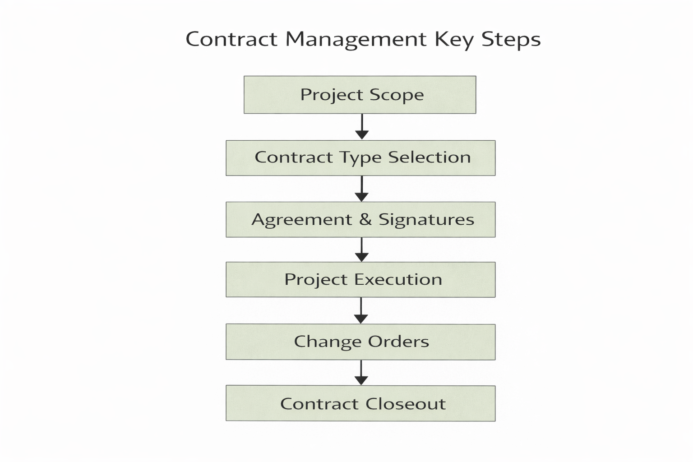
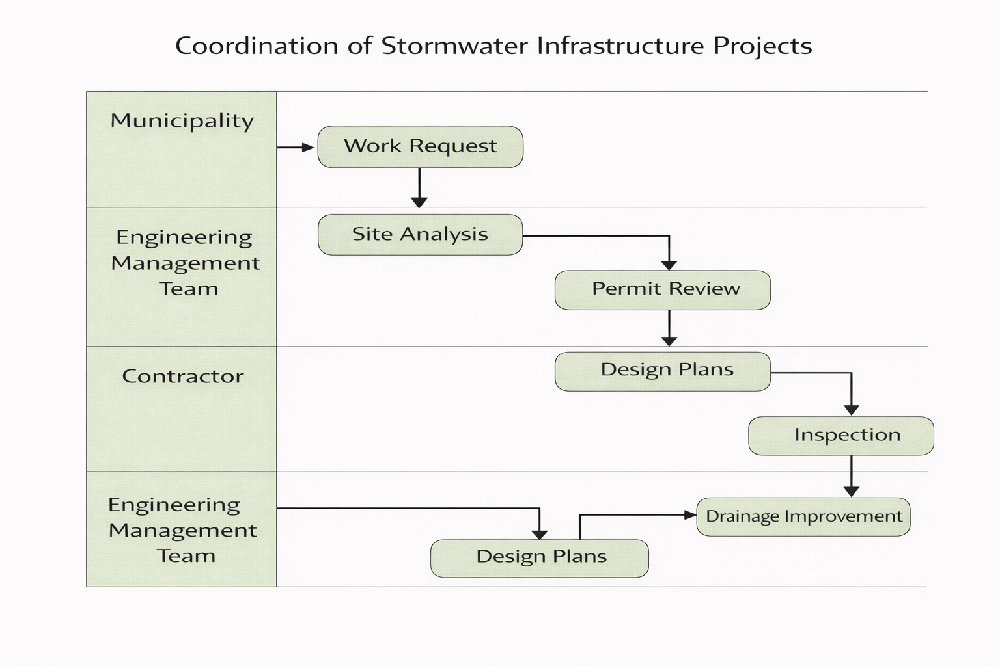
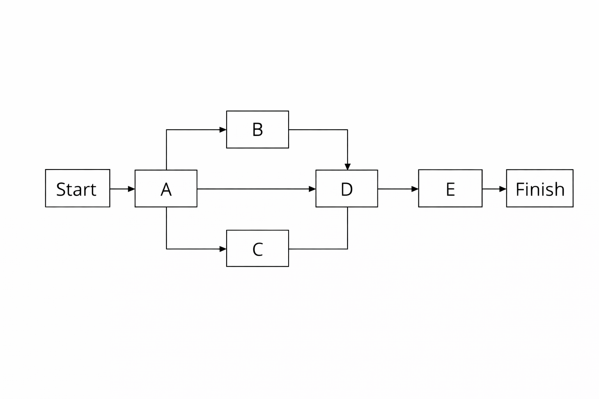
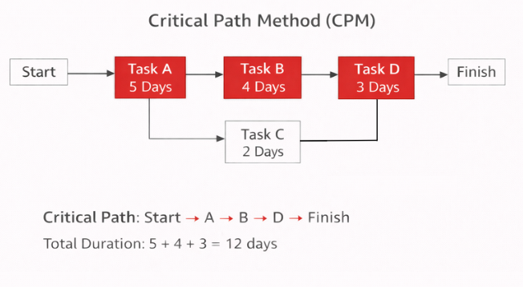

IE492-452 — Dr. Ranky
Engineering project management combines technical planning, scheduling, estimating, communication, and control into one organized system. In engineering work, a project manager must do more than keep a list of tasks. The manager must understand how tasks depend on each other, how contract terms affect performance, how labor productivity changes over time, how cost and cash flow behave during execution, and how process models and graphical tools can improve decisions. Kerzner’s project management chapters on scheduling, estimating, organization, and process methods explain that successful projects require structured methods rather than informal judgment alone. The Ranky multimedia eTextbook also presents project management as an engineering activity in which diagrams, formulas, logical flow, and repeatable methods are necessary for defendable solutions. In this assignment, these concepts are explained in general where the question asks for general knowledge, and they are also connected to NJ GreenFlow Engineering Management where the question asks how the concepts would be performed in my own company. NJ GreenFlow is used as a company model focused on sustainable stormwater infrastructure, flood resilience, compliance support, and coordination across municipalities and engineering stakeholders in New Jersey.
Network scheduling techniques are used in engineering project management to organize project activities and determine the order in which work must be completed. Many engineering projects involve tasks that depend on other tasks being finished first, so it is not enough to simply list the activities. The relationships between the activities must also be understood. This is why network diagrams are useful. They help engineers visualize task dependencies and determine the sequence that controls the overall project duration. According to standard project management scheduling logic, the total project duration is determined by the longest path through the network. This path is important because if any activity on it is delayed, the whole project will be delayed. This is the basic logic behind the Critical Path Method. The project duration can be written as the maximum total duration of any path in the network, which means that engineers calculate the total time along each path and identify the one that takes the longest. Critical chain scheduling is related to this idea but also considers resource limitations such as staff availability, approval bottlenecks, and equipment limits. Instead of putting safety time on every task, critical chain uses buffer logic to protect the overall schedule. In NJ GreenFlow, network scheduling would be useful for environmental review, engineering design, permit approval, procurement, construction, and inspection activities. Stormwater infrastructure projects are often affected by municipal review and compliance timing, so scheduling methods are necessary to predict delays and control milestones.
Contract management is important in engineering project management because it defines the responsibilities, risks, deliverables, and payment structure for the parties involved in a project. Kerzner explains that engineering work often involves multiple organizations such as clients, contractors, consultants, and regulatory agencies, so contracts are necessary to reduce confusion and control expectations. Common contract types include fixed-price contracts, cost-plus contracts, and time-and-materials contracts. A fixed-price contract sets one agreed amount for the work, which places more cost risk on the contractor. A cost-plus contract reimburses actual project cost and adds a fee or profit amount, which gives more flexibility when the scope is uncertain. A time-and-materials contract is useful when the exact amount of work cannot be fully defined at the beginning. Best practice in contract management includes clear scope definition, documented deliverables, milestone-based payments, and formal change-order procedures. This is important because contract problems often begin when scope is vague or when changes are made without written approval. In NJ GreenFlow, contract management would be especially important for municipal stormwater projects because the work may involve engineering studies, permit support, stakeholder meetings, and construction oversight. The company would need to define what is included, what is billed separately, how compliance support is handled, and how schedule changes affect the agreement. Good contract management improves accountability and reduces the chance of conflict later in the project.

Learning curves are used in engineering management to describe how productivity improves as workers gain experience. When a person or team performs a repeated task several times, the work usually becomes faster and more efficient. This matters in project management because labor time affects both cost and schedule. A common learning curve equation is Y = aXb, where Y is the labor time for the Xth unit, a is the labor time for the first unit, and b is the learning coefficient. In simple terms, this equation helps estimate how labor requirements decrease as production or repetition increases. For example, in an 80 percent learning curve, when output doubles, labor time drops to 80 percent of the previous value. If the first unit takes 100 hours, the second may take about 80 hours and the fourth about 64 hours. To build a learning curve, engineers usually record actual labor time for repeated tasks, analyze how performance improves, and then use the model to estimate future work. The same basic idea can also be discussed in machine learning, where a learning curve shows how performance changes as more training data becomes available. In NJ GreenFlow, learning curves could be applied to repeated activities such as field inspections, hydraulic calculations, permitting documentation, and recurring report preparation. As staff gain experience on similar stormwater infrastructure projects, estimating becomes more accurate and the company can plan future work more realistically.
Pricing and estimating are fundamental parts of engineering project management because they determine whether the work is financially realistic before execution begins. A project estimate usually includes labor cost, material cost, overhead, and contingency. In simple form, total project cost can be written as Labor + Materials + Overhead + Contingency. Labor cost includes engineering and management time, materials include physical project components, overhead includes indirect business cost, and contingency covers uncertainty or risk. Cost control then continues during project execution by comparing actual performance against the plan. Kerzner explains that one useful way to do this is through variance logic. A simple cost variance equation is CV = EV − AC, where EV is earned value and AC is actual cost. If the result is positive, the project is under budget. If the result is negative, it is over budget. Cash flow forecasting is also important because projects do not spend money evenly over time. Instead, spending usually rises and falls according to project phase. For example, a project may spend $20,000 in the first month, $40,000 in the second, $30,000 in the third, and $10,000 in the fourth. This kind of forecast helps ensure that money is available when needed. In NJ GreenFlow, pricing and estimating would be used for environmental analysis, design support, compliance review, public coordination, and construction oversight. Cash flow forecasting would help municipalities and company managers understand funding needs throughout the project lifecycle.
The major management functions in engineering project management are planning, organizing, directing, and controlling. Planning determines what must be done, by whom, with what resources, and by what date. Organizing creates the project structure and assigns responsibilities. Directing keeps work moving through communication and leadership. Controlling compares actual performance to the plan and corrects problems when they appear. These functions are basic, but they are still critical because many engineering problems in projects come from poor planning, unclear organization, weak communication, or lack of control. Kerzner also discusses the different organizational structures used for project management, including functional, projectized, and matrix organizations. A functional organization groups staff by specialty. A projectized organization builds dedicated teams around specific projects. A matrix structure combines both and is common when specialists must support multiple projects. In NJ GreenFlow, a matrix structure would make the most sense because civil, environmental, and management staff may all contribute to more than one infrastructure project at the same time. Best practice when working with executives is to communicate clearly and briefly, using schedule status, cost status, risk summaries, and decision needs. Best practice for pitching an idea to senior management is to explain the problem, describe the engineering solution, estimate the cost, and show what benefits the project will provide.
Trade-off analysis is used when project decisions involve competing objectives such as cost, schedule, performance, and risk. In engineering work, it is often impossible to improve one factor without affecting another. This means that managers must compare alternatives and choose the option that gives the best overall result rather than the best result in only one area. A simple trade-off model can be written as F = w1C + w2T + w3R, where C is cost, T is time, R is risk, and the weights represent the importance of each factor. The exact model may differ depending on the project, but the general idea is that engineers assign importance to the variables and compare alternatives using the same logic each time. Trade-off analysis is useful because it changes decision making from opinion into measured comparison. In NJ GreenFlow, this method would be useful when comparing stormwater infrastructure options such as permeable pavement, rain gardens, and traditional drainage improvements. One option may have lower first cost, while another may have better long-term resilience or stronger environmental performance. Trade-off analysis helps choose the alternative that produces the best overall value for the project and the community.
Flow charts are graphical tools used to show the sequence of tasks and decisions in a process. In engineering project management, they are useful because they make complex workflows easier to understand. A typical project flow might begin with project concept development, continue through feasibility review, engineering design, permitting, construction, inspection, and finish with project closeout. By putting these steps into a visual sequence, engineers can identify where tasks begin, where decisions are required, and where delays may occur. Flow charts are valuable because they turn a complicated written process into a simple visual process. In NJ GreenFlow, flow charts would be useful for organizing how work moves between municipalities, engineers, contractors, and compliance reviewers. This helps keep project logic clear and improves coordination.

Graphical methods are important in project management because many project relationships are easier to understand visually than in a long written description. One useful graphical method is the swim lane diagram, which is also called a cross-functional flowchart. A swim lane diagram separates project responsibilities into different lanes so that each participant’s role can be seen clearly. For example, one lane may represent the municipality, another the engineering management team, and another the contractor. The tasks are then shown in order across the lanes. This makes it easier to see where information is transferred, where approvals are needed, and where responsibility changes. In NJ GreenFlow, swim lane diagrams would be useful because stormwater infrastructure projects often depend on coordination between public agencies, engineers, and construction teams. The diagram improves communication by making responsibility visible instead of assumed.
The Program Evaluation and Review Technique is a scheduling method used when task durations are uncertain. Unlike CPM, which usually uses one fixed duration value for each task, PERT uses three time estimates. These are the optimistic estimate, the most likely estimate, and the pessimistic estimate. These are commonly written as O, M, and P. The expected task duration is then calculated using the formula Te = (O + 4M + P) / 6. This formula gives the most weight to the most likely estimate while still considering best-case and worst-case conditions. This is useful in engineering because many tasks are uncertain, especially early in planning.
For example, if a task has O = 2 days, M = 4 days, and P = 8 days, then the expected time is (2 + 16 + 8) / 6 = 4.33 days. A simple five-task PERT example can use tasks A, B, C, D, and E, where two of the tasks run in parallel. Moreover, Start → A → (B and C in parallel) → D → E → Finish. This kind of structure is useful because it reflects real engineering projects, where multiple activities often proceed at the same time before merging into later work. In NJ GreenFlow, PERT would be useful for scheduling uncertain activities such as municipal review, permit feedback, field conditions analysis, or consultant coordination, where exact durations may not be known in advance.

The Critical Path Method is a deterministic scheduling method used to determine the minimum completion time of a project. It does this by identifying the sequence of tasks that takes the longest total time. That sequence is called the critical path. The mathematical logic of CPM is based on network analysis, in which task dependencies are mapped and the duration of each path is calculated. A simple example can use tasks A, B, C, and D, where A must happen first, B and C depend on A, and D depends on both B and C. If path A → B → D takes 12 days and path A → C → D takes 10 days, then A → B → D is the critical path because it takes longer. A simple three-task example can also be used, but the five-task example with parallel activities is usually more useful because it shows actual network logic more clearly. CPM matters in engineering because it identifies the activities that cannot slip without delaying the whole project. In NJ GreenFlow, CPM would be useful for stormwater infrastructure projects where engineering design, permit approval, construction preparation, and field inspection must all happen in the correct order.

Mind maps and brainstorming methods are used in engineering project management to generate ideas and organize complex problems visually. A mind map usually begins with one central problem and then branches outward into categories of possible causes, alternatives, or solutions. This is useful because engineering problems often involve several connected factors at the same time. Best practice in brainstorming is to first define the problem clearly, then allow ideas to be proposed without immediate criticism, and then evaluate the ideas after the team has generated enough options. This keeps the early idea phase open while still allowing analytical evaluation later. A practical example would be a small engineering team trying to reduce urban stormwater runoff. The team may brainstorm solutions such as green roofs, permeable pavement, bioswales, rain gardens, or underground storage. These options can then be compared based on cost, environmental performance, maintenance, and feasibility. The TOPS method, which means Team Oriented Problem Solving, follows a more structured sequence. The team defines the problem, studies likely causes, generates solutions, evaluates them, and selects the best one for implementation. In NJ GreenFlow, mind maps and TOPS would be useful during the early concept stage of resilience projects when several green infrastructure alternatives must be discussed before design begins.
Quality Function Deployment is a structured method used to translate customer requirements into engineering design specifications. Customers usually describe needs in general terms, such as better flood protection, reduced maintenance, or stronger environmental compliance. Engineers then convert those needs into measurable technical characteristics. This is why QFD is useful in engineering project management. It helps connect what the customer wants to what the design must actually achieve. The House of Quality matrix is a common QFD tool because it compares customer needs with engineering parameters in one structured diagram. Customer discovery interviewing is also important because engineers must first understand the real needs of the stakeholder before they can define a technical response. Good customer discovery uses open-ended questions and looks for practical problems rather than only general preferences. Design specifications affect project management because they influence scope, schedule, cost, procurement, and quality control. Design reviews are also important. A conceptual design review checks whether the project is going in the right direction. A preliminary design review studies feasibility and technical development. A final design review confirms that the design meets requirements before construction. In NJ GreenFlow, QFD and design reviews would help translate municipal goals such as runoff reduction, resilience, and compliance into measurable engineering criteria for stormwater infrastructure systems.
The methods discussed in this assignment show that engineering project management depends on structured analytical tools rather than informal judgment alone. Network scheduling, contract management, learning curves, estimating, trade-off analysis, flow charts, PERT, CPM, brainstorming, and QFD all help convert engineering projects into systems that can be organized, analyzed, and controlled. Kerzner’s textbook and the Ranky project management materials both support the idea that projects should be managed using logical, repeatable methods with equations, diagrams, and defined process steps. These tools are especially useful when projects involve multiple stakeholders, uncertain durations, cost constraints, and technical requirements. In NJ GreenFlow, these methods would help manage sustainable stormwater infrastructure projects by improving coordination, schedule control, financial planning, and design quality. The overall lesson is that successful engineering management requires both technical understanding and structured managerial reasoning.
Kerzner, Harold. Project Management: A Systems Approach to Planning, Scheduling, and Controlling. 12th ed., Wiley, 2017.
Ranky, Paul G. Intro Project Management Multimedia eBook, CIMware UK and USA.
Student-created visuals prepared in Excel, Office Suite, and Canva are inserted into this page as supporting technical illustrations.